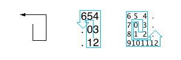

DWITE Online Computer Programming Contest
December 2009
Problem 4
Spiral Out

The objective is to draw a spiral pattern, starting from the centre, and wrapping around itself in a counter-clockwise direction. Each step is numbered by an integer, starting at 0 and counting up. There are no spaces joining the numbers, but some spots might be filled by a period . to complete a minimum rectangle, assuming that each number takes up just one slot.
The input file DATA4.txt will contain 5 lines, integers 0 <= N <= 20, the highest number appearing in the pattern.
The output file OUT4.txt will contain 5 sets -- rendered patterns as described above.
Sample Input:
0 1 2 4 12
Sample Output:
0 0 1 0. 12 .4 03 12 654. 703. 812. 9101112